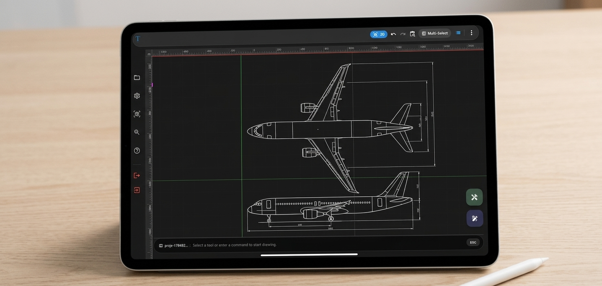

2D Teknik Çizim Neden Hâlâ Önemli?

3D modelleme ve görselleştirme teknolojileri her geçen gün gelişiyor. Mimarlık, mühendislik ve üretim alanlarında üç boyutlu modeller tasarım süreçlerinin önemli bir parçası hâline geldi. Ancak 3D teknolojiler bu kadar yaygınlaşmışken önemli bir soru hâlâ geçerliliğini koruyor: 2D teknik çizim neden hâlâ kullanılıyor?
Bunun temel nedeni, 2D çizimin yalnızca bir tasarım yöntemi olmaması. Teknik çizimler; ölçülerin, geometrinin, detayların, kesitlerin ve üretim için gerekli bilgilerin açık ve kontrollü şekilde aktarılmasını sağlayan önemli bir iletişim aracıdır.
Bu nedenle 2D CAD, 3D tasarım teknolojilerinin gelişmesine rağmen mimarlık, mühendislik, imalat, CNC, mobilya, iç mimarlık ve teknik eğitim gibi birçok alanda kullanılmaya devam ediyor.
2D Teknik Çizim Nedir?
2D teknik çizim, bir nesnenin, yapının veya parçanın iki boyutlu bir düzlem üzerinde belirli ölçüler ve geometrik bilgiler kullanılarak ifade edilmesidir.
Çizimde uzunluk ve genişlik gibi temel geometrik bilgiler kullanılır. Gerektiğinde ölçülendirme, katmanlar, çizgi tipleri, kesitler, semboller ve açıklamalar eklenerek teknik bilginin daha anlaşılır hâle gelmesi sağlanır.
Bilgisayar destekli tasarım sistemlerinde bu işlemler 2D CAD araçlarıyla gerçekleştirilebilir. Kullanıcı çizgiler, yaylar, daireler, polilineler ve diğer geometrik elemanlarla teknik çizimini oluşturabilir ve düzenleyebilir.
3D Tasarım Varken 2D Çizime Neden İhtiyaç Duyuluyor?
3D modelleme, tasarımın üç boyutlu olarak anlaşılmasını ve farklı açılardan incelenmesini kolaylaştırır. Ancak her teknik bilgiye üç boyutlu model üzerinden ulaşmak her zaman en pratik yöntem değildir.
Örneğin bir parçanın üretim ölçülerini, delik çaplarını, merkez mesafelerini veya belirli bir kesit bilgisini açıkça göstermek gerektiğinde standartlaştırılmış bir 2D teknik çizim çok daha doğrudan bir anlatım sağlayabilir.
Bu nedenle 2D ve 3D birbirinin rakibi olmak zorunda değildir. Aksine, tasarım sürecinin farklı ihtiyaçlarına cevap veren iki farklı çalışma biçimi olarak birlikte kullanılabilirler.
Mimarlıkta 2D Teknik Çizimin Önemi
Mimarlık projelerinde 3D modelleme ve görselleştirme önemli olsa da plan, kesit ve görünüş gibi iki boyutlu çizimler proje iletişiminin temel araçlarından biri olmaya devam eder.
Bir mimari plan üzerinde duvarlar, kapılar, pencereler, ölçüler ve çeşitli proje bilgileri belirli bir düzen içinde gösterilebilir. Bu çizimler projenin farklı aşamalarında tasarımın ve teknik bilgilerin aktarılmasına yardımcı olur.
Özellikle uygulama ve detay çalışmalarında çizimin ölçü ve geometri açısından açık olması büyük önem taşır.
Mühendislikte 2D CAD Kullanımı
Mühendislik alanında teknik çizimler, tasarlanan parçaların veya sistemlerin belirli özelliklerini aktarmak için kullanılabilir.
Makine parçaları, mekanik sistemler, elektrik projeleri ve farklı teknik uygulamalarda iki boyutlu çizimler; ölçülerin, bağlantı noktalarının ve geometrik ilişkilerin anlaşılmasını kolaylaştırabilir.
Bu nedenle mühendislik çalışmalarında 2D CAD programları, özellikle teknik dokümantasyon ve üretime yönelik çizim süreçlerinde hâlâ önemli bir yere sahiptir.
Üretim ve CNC Süreçlerinde 2D Çizim
2D teknik çizimin önemli kullanım alanlarından biri de üretimdir. Özellikle belirli geometrilerin kesilmesi, işlenmesi veya üretime aktarılması gereken süreçlerde iki boyutlu çizimler kullanılabilir.
CNC uygulamalarında kullanılan geometrilerin hazırlanması, kontrol edilmesi ve farklı sistemler arasında aktarılması sırasında DXF gibi dosya formatları da önemli bir rol oynar.
Bu nedenle 2D CAD yalnızca ekranda çizim yapmak anlamına gelmez. Hazırlanan geometrinin üretim sürecinde kullanılacak teknik veriye dönüşmesi de 2D çizimin önemli kullanım alanlarından biridir.
2D Teknik Çizimin En Büyük Avantajlarından Biri: Açıklık
Teknik çizimin temel amaçlarından biri, tasarlanan nesne veya yapıyla ilgili bilgiyi mümkün olduğunca açık şekilde aktarabilmektir.
2D çizimlerde görünüş, ölçü ve geometrik ilişkiler belirli bir düzlem üzerinde doğrudan gösterilebilir. Bu da çizimi inceleyen kişinin gerekli teknik bilgiyi daha hızlı değerlendirmesine yardımcı olabilir.
Özellikle üretim veya uygulama aşamasında çizimin kolay okunabilmesi, tasarımın doğru şekilde yorumlanması açısından önemlidir.
2D CAD ile Çalışmak Hangi Avantajları Sağlar?
Modern 2D CAD yazılımları, geleneksel çizim yöntemlerine kıyasla teknik çizim sürecini daha kontrollü ve düzenli hâle getirebilir.
- Hassas çizim: Geometriler belirli koordinatlar ve ölçüler kullanılarak oluşturulabilir.
- Kolay düzenleme: Çizimdeki elemanlar gerektiğinde değiştirilebilir, taşınabilir veya yeniden düzenlenebilir.
- Katman kullanımı: Farklı çizim elemanları ayrı katmanlarda düzenlenerek proje yönetimi kolaylaştırılabilir.
- Dosya paylaşımı: Teknik çizimler farklı dosya formatları kullanılarak başka çalışma ortamlarına aktarılabilir.
- Tekrar kullanılabilirlik: Daha önce oluşturulan çizimler üzerinde değişiklik yapılarak yeni projeler hazırlanabilir.
- Daha düzenli çalışma: Snap, grid, ölçülendirme ve düzenleme araçları teknik çizimin kontrolünü kolaylaştırabilir.
2D Teknik Çizim Sadece Profesyoneller İçin Değildir
Teknik çizim denildiğinde yalnızca büyük mühendislik ofisleri veya profesyonel CAD operatörleri düşünülmemelidir.
Mimarlık ve mühendislik öğrencileri, teknik eğitim alan kullanıcılar, tasarımcılar, teknikerler, CNC ile çalışan kişiler ve çeşitli üretim alanlarında görev yapan kullanıcılar da 2D CAD araçlarından yararlanabilir.
Özellikle eğitim sürecinde 2D çizim, geometrik düşünme, ölçülendirme ve teknik çizim mantığının öğrenilmesi açısından önemli bir temel oluşturabilir.
2D CAD ile Mobil CAD Arasındaki Bağlantı
CAD çalışmalarının masaüstü bilgisayarlara bağlı olması, teknik çizim yapmak isteyen kullanıcıların çalışma alanını sınırlandırabilir. Ancak mobil cihazların gelişmesiyle birlikte teknik çizim çalışmalarını daha taşınabilir hâle getirmek mümkün hâle geliyor.
Mobil CAD yaklaşımı, temel 2D CAD çalışma mantığını telefon ve tablet gibi taşınabilir cihazlara taşıyarak kullanıcıların teknik çizimlerine ihtiyaç duydukları farklı ortamlardan erişebilmesine olanak sağlayabilir.
Özellikle tabletlerin daha geniş ekran alanı sunması, dokunmatik kullanım ve gerektiğinde fiziksel klavye bağlanabilmesi, mobil CAD kullanımını farklı çalışma senaryoları için daha uygun hâle getirebilir.
Mobil CAD hakkında daha ayrıntılı bilgi edinmek için Mobil CAD Nedir? Teknik Çizimi Bilgisayardan Tablete Taşımak başlıklı yazımıza da göz atabilirsiniz.
2D Çizimden 3D Görselleştirmeye
2D çizimin günümüzde hâlâ önemli olması, üç boyutlu teknolojilerin gereksiz olduğu anlamına gelmez. Tam tersine, iki farklı yaklaşım birlikte kullanıldığında tasarımın hem teknik hem de görsel açıdan daha iyi anlaşılması mümkün olabilir.
Bir teknik çizimin üç boyutlu görünüm üzerinden incelenmesi, geometrinin farklı bir açıdan değerlendirilmesine yardımcı olabilir.
TamgamCAD'in 2D → 3D görselleştirme özelliği de bu yaklaşım üzerine kuruludur. Hazırlanan 2D geometriler, tasarımın üç boyutlu görünümünü incelemek amacıyla görselleştirilebilir.
Bu özelliğin nasıl çalıştığını daha ayrıntılı görmek için 2D Teknik Çizimleri 3D Görselleştirme makalemizi inceleyebilirsiniz.
2D Teknik Çizimin Geleceği
Tasarım teknolojileri değişmeye devam ediyor. 3D modelleme, parametrik tasarım, görselleştirme ve farklı dijital üretim teknolojileri CAD dünyasını dönüştürüyor.
Ancak yeni teknolojilerin ortaya çıkması, daha önce kullanılan yöntemlerin tamamen ortadan kalkacağı anlamına gelmiyor. 2D teknik çizim; açık, ölçülebilir ve teknik bilgi aktarımına uygun yapısı nedeniyle birçok çalışma alanında kullanılmaya devam edebilir.
Gelecekte daha önemli hâle gelecek olan yaklaşım, 2D ve 3D araçlardan yalnızca birini seçmek yerine projenin ihtiyacına göre doğru yöntemi kullanmak olabilir.
Sonuç: 2D ve 3D Birbirinin Rakibi Değil
2D teknik çizim neden hâlâ önemli? Çünkü teknik bilgi her zaman yalnızca üç boyutlu bir model üzerinden aktarılmak zorunda değildir.
Mimarlıkta plan ve kesitlerden mühendislik çizimlerine, üretim geometrilerinden CNC süreçlerine kadar 2D CAD, teknik bilginin açık ve kontrollü şekilde aktarılmasında önemli bir araç olmaya devam ediyor.
3D modelleme ise bu çizimlerin ve tasarımların farklı bir perspektiften anlaşılmasına yardımcı olabilir. Bu nedenle geleceğin CAD çalışma düzeninde 2D ve 3D'nin birlikte kullanılması oldukça doğal bir yaklaşım olarak karşımıza çıkıyor.
TamgamCAD de bu yaklaşım doğrultusunda 2D teknik çizim araçlarını mobil çalışma deneyimi ve 2D → 3D görselleştirme özellikleriyle bir araya getiriyor.
2D Teknik Çizim Çalışmalarınızı Mobil Ortama Taşıyın
Teknik çizimlerinizi oluşturmak, düzenlemek, DXF dosyalarıyla çalışmak ve hazırladığınız 2D geometrileri farklı bir perspektiften incelemek için TamgamCAD'i keşfedin.
TamgamCAD'i Keşfedin